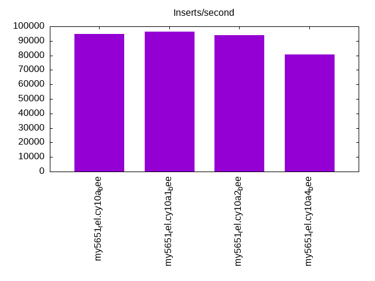
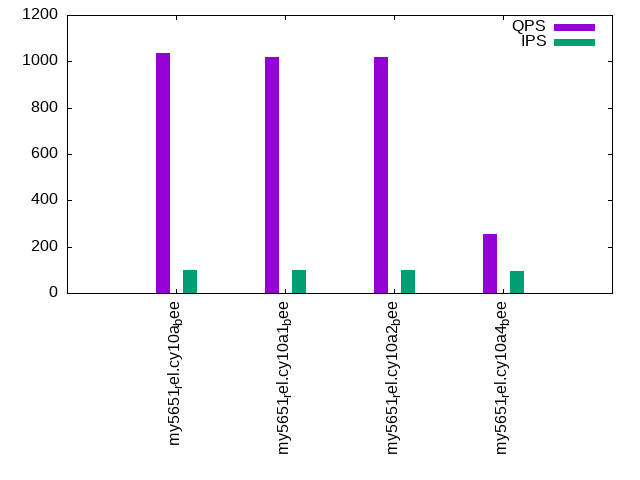
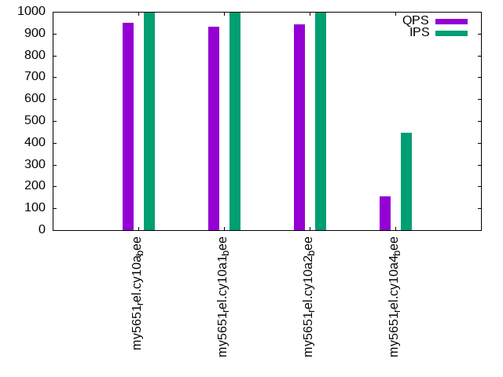

Introduction
This is a report for the insert benchmark with 800M docs and 1 client(s). It is generated by scripts (bash, awk, sed) and Tufte might not be impressed. An overview of the insert benchmark is here and a short update is here. Below, by DBMS, I mean DBMS+version.config. An example is my8020.c10b40 where my means MySQL, 8020 is version 8.0.20 and c10b40 is the name for the configuration file.
The test server has 8 AMD cores, 16G RAM and an NVMe SSD. It is described here as the Beelink. The benchmark was run with 1 client and there were 1 or 3 connections per client (1 for queries or inserts without rate limits, 1+1 for rate limited inserts+deletes). There is 1 table. It loads 800M rows without secondary indexes, creates secondary indexes, then inserts 10M rows with a delete per insert to avoid growing the table. It then does 3 read+write tests for 3600s each that do queries as fast as possible with 100, 500 and then 1000 inserts/second/client concurrent with the queries and 1000 deletes/second to avoid growing the table. The database is larger than memory.
The tested DBMS are:
- my5651_rel.cy10a_bee - InnoDB and MySQL 5.6.51, rel build, cy10a_bee config, compiled with CMAKE_BUILD_TYPE=Release, base config
my5651_rel.cy10a2_bee - InnoDB and MySQL 5.6.51, rel build, cy10a2_bee config, compiled with CMAKE_BUILD_TYPE=Release, adds innodb_io_capacity=20k, innodb_io_capacity_max=40k - my5651_rel.cy10a4_bee - InnoDB and MySQL 5.6.51, rel build, cy10a4_bee config, compiled with CMAKE_BUILD_TYPE=Release, adds innodb_flush_method=fsync
Contents
- Summary
- l.i0: load without secondary indexes
- l.x: create secondary indexes
- l.i1: continue load after secondary indexes created
- q100.1: range queries with 100 insert/s per client
- q500.1: range queries with 500 insert/s per client
- q1000.1: range queries with 1000 insert/s per client
Summary
The numbers are inserts/s for l.i0 and l.i1, indexed docs (or rows) /s for l.x and queries/s for q*.2. The values are the average rate over the entire test for inserts (IPS) and queries (QPS). The range of values for IPS and QPS is split into 3 parts: bottom 25%, middle 50%, top 25%. Values in the bottom 25% have a red background, values in the top 25% have a green background and values in the middle have no color. A gray background is used for values that can be ignored because the DBMS did not sustain the target insert rate. Red backgrounds are not used when the minimum value is within 80% of the max value.
| dbms | l.i0 | l.x | l.i1 | q100.1 | q500.1 | q1000.1 |
|---|---|---|---|---|---|---|
| 800m.my5651_rel.cy10a_bee | 94798 | 86507 | 1700 | 1035 | 1131 | 948 |
| 800m.my5651_rel.cy10a1_bee | 96513 | 78804 | 1597 | 1017 | 1110 | 932 |
| 800m.my5651_rel.cy10a2_bee | 93864 | 86413 | 1670 | 1018 | 1127 | 941 |
| 800m.my5651_rel.cy10a4_bee | 80678 | 37988 | 363 | 254 | 161 | 154 |
This table has relative throughput, throughput for the DBMS relative to the DBMS in the first line, using the absolute throughput from the previous table.
| dbms | l.i0 | l.x | l.i1 | q100.1 | q500.1 | q1000.1 |
|---|---|---|---|---|---|---|
| 800m.my5651_rel.cy10a_bee | 1.00 | 1.00 | 1.00 | 1.00 | 1.00 | 1.00 |
| 800m.my5651_rel.cy10a1_bee | 1.02 | 0.91 | 0.94 | 0.98 | 0.98 | 0.98 |
| 800m.my5651_rel.cy10a2_bee | 0.99 | 1.00 | 0.98 | 0.98 | 1.00 | 0.99 |
| 800m.my5651_rel.cy10a4_bee | 0.85 | 0.44 | 0.21 | 0.25 | 0.14 | 0.16 |
This lists the average rate of inserts/s for the tests that do inserts concurrent with queries. For such tests the query rate is listed in the table above. The read+write tests are setup so that the insert rate should match the target rate every second. Cells that are not at least 95% of the target have a red background to indicate a failure to satisfy the target.
| dbms | q100.1 | q500.1 | q1000.1 |
|---|---|---|---|
| my5651_rel.cy10a_bee | 100 | 499 | 999 |
| my5651_rel.cy10a1_bee | 100 | 499 | 997 |
| my5651_rel.cy10a2_bee | 100 | 499 | 998 |
| my5651_rel.cy10a4_bee | 97 | 352 | 445 |
| target | 100 | 500 | 1000 |
l.i0
l.i0: load without secondary indexes. Graphs for performance per 1-second interval are here.
Average throughput:
Insert response time histogram: each cell has the percentage of responses that take <= the time in the header and max is the max response time in seconds. For the max column values in the top 25% of the range have a red background and in the bottom 25% of the range have a green background. The red background is not used when the min value is within 80% of the max value.
| dbms | 256us | 1ms | 4ms | 16ms | 64ms | 256ms | 1s | 4s | 16s | gt | max |
|---|---|---|---|---|---|---|---|---|---|---|---|
| my5651_rel.cy10a_bee | 82.659 | 17.196 | 0.071 | 0.070 | 0.004 | 0.209 | |||||
| my5651_rel.cy10a1_bee | 86.878 | 12.982 | 0.101 | 0.035 | 0.004 | 0.222 | |||||
| my5651_rel.cy10a2_bee | 81.972 | 17.833 | 0.126 | 0.065 | 0.004 | 0.199 | |||||
| my5651_rel.cy10a4_bee | 63.202 | 35.640 | 0.973 | 0.181 | 0.003 | 0.204 |
Performance metrics for the DBMS listed above. Some are normalized by throughput, others are not. Legend for results is here.
ips qps rps rmbps wps wmbps rpq rkbpq wpi wkbpi csps cpups cspq cpupq dbgb1 dbgb2 rss maxop p50 p99 tag 94798 0 831 3.2 460.3 33.9 0.009 0.035 0.005 0.366 12098 21.6 0.128 18 52.6 93.1 10.6 0.209 95296 76713 800m.my5651_rel.cy10a_bee 96513 0 845 3.3 91.7 34.5 0.009 0.035 0.001 0.366 11118 21.8 0.115 18 52.6 93.1 10.6 0.222 96993 80208 800m.my5651_rel.cy10a1_bee 93864 0 823 3.2 469.4 33.9 0.009 0.035 0.005 0.370 12051 21.6 0.128 18 52.6 93.1 10.6 0.199 94696 69811 800m.my5651_rel.cy10a2_bee 80678 0 708 2.8 91.4 28.9 0.009 0.035 0.001 0.367 9897 20.3 0.123 20 52.6 93.1 10.6 0.204 80507 68821 800m.my5651_rel.cy10a4_bee
l.x
l.x: create secondary indexes.
Average throughput:
Performance metrics for the DBMS listed above. Some are normalized by throughput, others are not. Legend for results is here.
ips qps rps rmbps wps wmbps rpq rkbpq wpi wkbpi csps cpups cspq cpupq dbgb1 dbgb2 rss maxop p50 p99 tag 86507 0 565 82.5 698.2 104.3 0.007 0.977 0.008 1.235 1974 11.3 0.023 10 108.4 148.9 10.3 0.012 NA NA 800m.my5651_rel.cy10a_bee 78804 0 234 74.3 335.7 95.8 0.003 0.965 0.004 1.245 1023 10.5 0.013 11 108.4 148.9 10.4 0.015 NA NA 800m.my5651_rel.cy10a1_bee 86413 0 567 82.4 699.5 104.1 0.007 0.977 0.008 1.234 1945 11.3 0.023 10 108.4 148.9 10.3 0.018 NA NA 800m.my5651_rel.cy10a2_bee 37988 0 129 35.8 279.9 47.0 0.003 0.966 0.007 1.268 1571 5.9 0.041 12 108.4 148.9 10.3 0.018 NA NA 800m.my5651_rel.cy10a4_bee
l.i1
l.i1: continue load after secondary indexes created. Graphs for performance per 1-second interval are here.
Average throughput:

Insert response time histogram: each cell has the percentage of responses that take <= the time in the header and max is the max response time in seconds. For the max column values in the top 25% of the range have a red background and in the bottom 25% of the range have a green background. The red background is not used when the min value is within 80% of the max value.
| dbms | 256us | 1ms | 4ms | 16ms | 64ms | 256ms | 1s | 4s | 16s | gt | max |
|---|---|---|---|---|---|---|---|---|---|---|---|
| my5651_rel.cy10a_bee | 23.011 | 71.204 | 5.784 | 0.001 | 0.808 | ||||||
| my5651_rel.cy10a1_bee | 15.588 | 78.070 | 6.341 | 0.002 | 0.845 | ||||||
| my5651_rel.cy10a2_bee | 23.439 | 70.209 | 6.349 | 0.003 | 0.845 | ||||||
| my5651_rel.cy10a4_bee | 0.009 | 50.282 | 39.091 | 8.454 | 2.165 | 0.001 | 4.801 |
Delete response time histogram: each cell has the percentage of responses that take <= the time in the header and max is the max response time in seconds. For the max column values in the top 25% of the range have a red background and in the bottom 25% of the range have a green background. The red background is not used when the min value is within 80% of the max value.
| dbms | 256us | 1ms | 4ms | 16ms | 64ms | 256ms | 1s | 4s | 16s | gt | max |
|---|---|---|---|---|---|---|---|---|---|---|---|
| my5651_rel.cy10a_bee | 1.768 | 92.130 | 6.096 | 0.004 | 0.001 | 0.599 | |||||
| my5651_rel.cy10a1_bee | 1.978 | 90.667 | 7.350 | 0.005 | 0.001 | 0.634 | |||||
| my5651_rel.cy10a2_bee | 1.879 | 91.853 | 6.249 | 0.018 | 0.001 | 0.589 | |||||
| my5651_rel.cy10a4_bee | 3.639 | 52.834 | 38.432 | 4.418 | 0.670 | 0.006 | 0.001 | 4.292 |
Performance metrics for the DBMS listed above. Some are normalized by throughput, others are not. Legend for results is here.
ips qps rps rmbps wps wmbps rpq rkbpq wpi wkbpi csps cpups cspq cpupq dbgb1 dbgb2 rss maxop p50 p99 tag 1700 0 7487 116.2 9961.1 314.1 4.404 70.008 5.859 189.172 46829 16.1 27.545 758 151.6 193.3 10.5 0.808 1697 699 800m.my5651_rel.cy10a_bee 1597 0 6922 109.5 8400.2 295.6 4.336 70.219 5.261 189.558 34941 14.9 21.885 747 151.8 193.3 10.5 0.845 1598 699 800m.my5651_rel.cy10a1_bee 1670 0 7848 121.9 10303.6 324.1 4.699 74.737 6.170 198.749 48199 16.3 28.862 781 152.0 193.2 10.5 0.845 1548 699 800m.my5651_rel.cy10a2_bee 363 0 2025 36.0 2581.2 83.6 5.574 101.543 7.105 235.740 14812 6.8 40.771 1497 146.8 187.5 10.1 4.801 300 0 800m.my5651_rel.cy10a4_bee
q100.1
q100.1: range queries with 100 insert/s per client. Graphs for performance per 1-second interval are here.
Average throughput:
Query response time histogram: each cell has the percentage of responses that take <= the time in the header and max is the max response time in seconds. For max values in the top 25% of the range have a red background and in the bottom 25% of the range have a green background. The red background is not used when the min value is within 80% of the max value.
| dbms | 256us | 1ms | 4ms | 16ms | 64ms | 256ms | 1s | 4s | 16s | gt | max |
|---|---|---|---|---|---|---|---|---|---|---|---|
| my5651_rel.cy10a_bee | 28.539 | 18.234 | 51.759 | 1.460 | 0.008 | 0.046 | |||||
| my5651_rel.cy10a1_bee | 28.135 | 18.193 | 52.400 | 1.264 | 0.008 | 0.040 | |||||
| my5651_rel.cy10a2_bee | 28.190 | 18.229 | 51.999 | 1.574 | 0.008 | 0.041 | |||||
| my5651_rel.cy10a4_bee | 9.959 | 28.840 | 51.378 | 7.517 | 1.353 | 0.813 | 0.140 | 0.524 |
Insert response time histogram: each cell has the percentage of responses that take <= the time in the header and max is the max response time in seconds. For max values in the top 25% of the range have a red background and in the bottom 25% of the range have a green background. The red background is not used when the min value is within 80% of the max value.
| dbms | 256us | 1ms | 4ms | 16ms | 64ms | 256ms | 1s | 4s | 16s | gt | max |
|---|---|---|---|---|---|---|---|---|---|---|---|
| my5651_rel.cy10a_bee | 0.042 | 69.375 | 30.583 | 0.150 | |||||||
| my5651_rel.cy10a1_bee | 0.361 | 91.875 | 7.764 | 0.109 | |||||||
| my5651_rel.cy10a2_bee | 0.819 | 67.806 | 31.375 | 0.133 | |||||||
| my5651_rel.cy10a4_bee | 49.014 | 27.972 | 21.972 | 1.028 | 0.014 | 5.016 |
Delete response time histogram: each cell has the percentage of responses that take <= the time in the header and max is the max response time in seconds. For max values in the top 25% of the range have a red background and in the bottom 25% of the range have a green background. The red background is not used when the min value is within 80% of the max value.
| dbms | 256us | 1ms | 4ms | 16ms | 64ms | 256ms | 1s | 4s | 16s | gt | max |
|---|---|---|---|---|---|---|---|---|---|---|---|
| my5651_rel.cy10a_bee | 13.653 | 67.542 | 18.806 | 0.052 | |||||||
| my5651_rel.cy10a1_bee | 12.000 | 72.125 | 15.875 | 0.053 | |||||||
| my5651_rel.cy10a2_bee | 11.278 | 69.764 | 18.958 | 0.060 | |||||||
| my5651_rel.cy10a4_bee | 4.444 | 36.833 | 36.500 | 19.944 | 2.278 | 0.798 |
Performance metrics for the DBMS listed above. Some are normalized by throughput, others are not. Legend for results is here.
ips qps rps rmbps wps wmbps rpq rkbpq wpi wkbpi csps cpups cspq cpupq dbgb1 dbgb2 rss maxop p50 p99 tag 100 1035 10125 158.1 5700.0 172.1 9.782 156.452 57.115 1766.291 40387 10.5 39.018 812 151.6 193.3 10.5 0.046 927 783 800m.my5651_rel.cy10a_bee 100 1017 10058 158.0 5507.8 173.2 9.894 159.169 55.243 1779.332 34362 10.0 33.801 787 151.8 193.3 10.5 0.040 911 778 800m.my5651_rel.cy10a1_bee 100 1018 10463 163.4 6068.2 183.0 10.274 164.330 60.864 1879.590 42076 10.8 41.316 848 152.0 193.2 10.5 0.041 927 783 800m.my5651_rel.cy10a2_bee 97 254 2861 67.6 2213.2 65.8 11.251 272.402 22.863 696.196 17641 7.5 69.370 2359 146.8 187.5 8.4 0.524 256 16 800m.my5651_rel.cy10a4_bee
q500.1
q500.1: range queries with 500 insert/s per client. Graphs for performance per 1-second interval are here.
Average throughput:
Query response time histogram: each cell has the percentage of responses that take <= the time in the header and max is the max response time in seconds. For max values in the top 25% of the range have a red background and in the bottom 25% of the range have a green background. The red background is not used when the min value is within 80% of the max value.
| dbms | 256us | 1ms | 4ms | 16ms | 64ms | 256ms | 1s | 4s | 16s | gt | max |
|---|---|---|---|---|---|---|---|---|---|---|---|
| my5651_rel.cy10a_bee | 32.229 | 15.256 | 51.783 | 0.728 | 0.005 | 0.044 | |||||
| my5651_rel.cy10a1_bee | 31.484 | 15.686 | 52.175 | 0.648 | 0.007 | 0.042 | |||||
| my5651_rel.cy10a2_bee | 31.945 | 15.441 | 51.891 | 0.718 | 0.005 | 0.048 | |||||
| my5651_rel.cy10a4_bee | 7.984 | 26.823 | 52.677 | 7.993 | 2.434 | 1.710 | 0.379 | 0.579 |
Insert response time histogram: each cell has the percentage of responses that take <= the time in the header and max is the max response time in seconds. For max values in the top 25% of the range have a red background and in the bottom 25% of the range have a green background. The red background is not used when the min value is within 80% of the max value.
| dbms | 256us | 1ms | 4ms | 16ms | 64ms | 256ms | 1s | 4s | 16s | gt | max |
|---|---|---|---|---|---|---|---|---|---|---|---|
| my5651_rel.cy10a_bee | 14.222 | 83.883 | 1.894 | 0.125 | |||||||
| my5651_rel.cy10a1_bee | 11.153 | 88.214 | 0.633 | 0.143 | |||||||
| my5651_rel.cy10a2_bee | 12.014 | 85.817 | 2.169 | 0.116 | |||||||
| my5651_rel.cy10a4_bee | 0.003 | 67.769 | 15.636 | 15.456 | 1.136 | 2.671 |
Delete response time histogram: each cell has the percentage of responses that take <= the time in the header and max is the max response time in seconds. For max values in the top 25% of the range have a red background and in the bottom 25% of the range have a green background. The red background is not used when the min value is within 80% of the max value.
| dbms | 256us | 1ms | 4ms | 16ms | 64ms | 256ms | 1s | 4s | 16s | gt | max |
|---|---|---|---|---|---|---|---|---|---|---|---|
| my5651_rel.cy10a_bee | 14.561 | 80.550 | 4.881 | 0.008 | 0.086 | ||||||
| my5651_rel.cy10a1_bee | 14.842 | 82.039 | 3.117 | 0.003 | 0.080 | ||||||
| my5651_rel.cy10a2_bee | 15.675 | 78.586 | 5.717 | 0.022 | 0.095 | ||||||
| my5651_rel.cy10a4_bee | 4.933 | 53.033 | 31.039 | 9.864 | 1.128 | 0.003 | 1.460 |
Performance metrics for the DBMS listed above. Some are normalized by throughput, others are not. Legend for results is here.
ips qps rps rmbps wps wmbps rpq rkbpq wpi wkbpi csps cpups cspq cpupq dbgb1 dbgb2 rss maxop p50 p99 tag 499 1131 9326 145.5 4103.4 125.0 8.247 131.756 8.222 256.382 34432 10.2 30.446 722 151.6 193.3 10.5 0.044 1135 1055 800m.my5651_rel.cy10a_bee 499 1110 9224 143.9 4009.7 125.6 8.312 132.807 8.042 257.958 31368 9.7 28.264 699 151.8 193.3 10.5 0.042 1115 1023 800m.my5651_rel.cy10a1_bee 499 1127 9333 145.6 4152.9 126.5 8.280 132.289 8.322 259.632 34575 10.3 30.676 731 152.0 193.2 10.5 0.048 1134 1055 800m.my5651_rel.cy10a2_bee 352 161 2302 51.4 2127.5 62.1 14.305 327.358 6.051 180.970 16071 7.7 99.882 3828 146.8 187.5 9.3 0.579 144 0 800m.my5651_rel.cy10a4_bee
q1000.1
q1000.1: range queries with 1000 insert/s per client. Graphs for performance per 1-second interval are here.
Average throughput:
Query response time histogram: each cell has the percentage of responses that take <= the time in the header and max is the max response time in seconds. For max values in the top 25% of the range have a red background and in the bottom 25% of the range have a green background. The red background is not used when the min value is within 80% of the max value.
| dbms | 256us | 1ms | 4ms | 16ms | 64ms | 256ms | 1s | 4s | 16s | gt | max |
|---|---|---|---|---|---|---|---|---|---|---|---|
| my5651_rel.cy10a_bee | 23.990 | 18.368 | 55.675 | 1.956 | 0.011 | 0.051 | |||||
| my5651_rel.cy10a1_bee | 23.541 | 18.803 | 56.028 | 1.614 | 0.014 | 0.043 | |||||
| my5651_rel.cy10a2_bee | 24.221 | 17.932 | 55.862 | 1.975 | 0.010 | 0.045 | |||||
| my5651_rel.cy10a4_bee | 7.870 | 26.574 | 52.459 | 8.406 | 2.519 | 1.767 | 0.406 | nonzero | 1.085 |
Insert response time histogram: each cell has the percentage of responses that take <= the time in the header and max is the max response time in seconds. For max values in the top 25% of the range have a red background and in the bottom 25% of the range have a green background. The red background is not used when the min value is within 80% of the max value.
| dbms | 256us | 1ms | 4ms | 16ms | 64ms | 256ms | 1s | 4s | 16s | gt | max |
|---|---|---|---|---|---|---|---|---|---|---|---|
| my5651_rel.cy10a_bee | 49.422 | 48.818 | 1.760 | 0.120 | |||||||
| my5651_rel.cy10a1_bee | 36.826 | 62.799 | 0.375 | 0.097 | |||||||
| my5651_rel.cy10a2_bee | 42.208 | 55.644 | 2.147 | 0.129 | |||||||
| my5651_rel.cy10a4_bee | 0.229 | 75.540 | 10.915 | 12.553 | 0.762 | 2.762 |
Delete response time histogram: each cell has the percentage of responses that take <= the time in the header and max is the max response time in seconds. For max values in the top 25% of the range have a red background and in the bottom 25% of the range have a green background. The red background is not used when the min value is within 80% of the max value.
| dbms | 256us | 1ms | 4ms | 16ms | 64ms | 256ms | 1s | 4s | 16s | gt | max |
|---|---|---|---|---|---|---|---|---|---|---|---|
| my5651_rel.cy10a_bee | 12.354 | 85.789 | 1.857 | 0.063 | |||||||
| my5651_rel.cy10a1_bee | 14.979 | 83.668 | 1.353 | 0.056 | |||||||
| my5651_rel.cy10a2_bee | 13.015 | 84.835 | 2.143 | 0.007 | 0.073 | ||||||
| my5651_rel.cy10a4_bee | 2.153 | 54.085 | 34.532 | 8.367 | 0.858 | 0.006 | 1.818 |
Performance metrics for the DBMS listed above. Some are normalized by throughput, others are not. Legend for results is here.
ips qps rps rmbps wps wmbps rpq rkbpq wpi wkbpi csps cpups cspq cpupq dbgb1 dbgb2 rss maxop p50 p99 tag 999 948 11370 177.2 7125.8 216.6 11.991 191.400 7.134 222.065 47922 14.5 50.540 1223 151.6 193.3 10.5 0.051 943 879 800m.my5651_rel.cy10a_bee 997 932 11273 175.8 6945.9 216.5 12.095 193.167 6.965 222.336 41663 13.8 44.703 1185 151.8 193.3 10.5 0.043 943 847 800m.my5651_rel.cy10a1_bee 998 941 11390 177.5 7163.3 217.7 12.099 193.125 7.178 223.336 47998 14.7 50.986 1249 152.0 193.2 10.5 0.045 943 863 800m.my5651_rel.cy10a2_bee 445 154 2160 50.6 2059.4 61.4 13.978 335.602 4.625 141.303 15450 7.8 99.997 4039 150.6 191.5 9.4 1.085 128 0 800m.my5651_rel.cy10a4_bee
l.i0
l.i0: load without secondary indexes
Performance metrics for all DBMS, not just the ones listed above. Some are normalized by throughput, others are not. Legend for results is here.
ips qps rps rmbps wps wmbps rpq rkbpq wpi wkbpi csps cpups cspq cpupq dbgb1 dbgb2 rss maxop p50 p99 tag 94798 0 831 3.2 460.3 33.9 0.009 0.035 0.005 0.366 12098 21.6 0.128 18 52.6 93.1 10.6 0.209 95296 76713 800m.my5651_rel.cy10a_bee 96513 0 845 3.3 91.7 34.5 0.009 0.035 0.001 0.366 11118 21.8 0.115 18 52.6 93.1 10.6 0.222 96993 80208 800m.my5651_rel.cy10a1_bee 93864 0 823 3.2 469.4 33.9 0.009 0.035 0.005 0.370 12051 21.6 0.128 18 52.6 93.1 10.6 0.199 94696 69811 800m.my5651_rel.cy10a2_bee 80678 0 708 2.8 91.4 28.9 0.009 0.035 0.001 0.367 9897 20.3 0.123 20 52.6 93.1 10.6 0.204 80507 68821 800m.my5651_rel.cy10a4_bee
l.x
l.x: create secondary indexes
Performance metrics for all DBMS, not just the ones listed above. Some are normalized by throughput, others are not. Legend for results is here.
ips qps rps rmbps wps wmbps rpq rkbpq wpi wkbpi csps cpups cspq cpupq dbgb1 dbgb2 rss maxop p50 p99 tag 86507 0 565 82.5 698.2 104.3 0.007 0.977 0.008 1.235 1974 11.3 0.023 10 108.4 148.9 10.3 0.012 NA NA 800m.my5651_rel.cy10a_bee 78804 0 234 74.3 335.7 95.8 0.003 0.965 0.004 1.245 1023 10.5 0.013 11 108.4 148.9 10.4 0.015 NA NA 800m.my5651_rel.cy10a1_bee 86413 0 567 82.4 699.5 104.1 0.007 0.977 0.008 1.234 1945 11.3 0.023 10 108.4 148.9 10.3 0.018 NA NA 800m.my5651_rel.cy10a2_bee 37988 0 129 35.8 279.9 47.0 0.003 0.966 0.007 1.268 1571 5.9 0.041 12 108.4 148.9 10.3 0.018 NA NA 800m.my5651_rel.cy10a4_bee
l.i1
l.i1: continue load after secondary indexes created
Performance metrics for all DBMS, not just the ones listed above. Some are normalized by throughput, others are not. Legend for results is here.
ips qps rps rmbps wps wmbps rpq rkbpq wpi wkbpi csps cpups cspq cpupq dbgb1 dbgb2 rss maxop p50 p99 tag 1700 0 7487 116.2 9961.1 314.1 4.404 70.008 5.859 189.172 46829 16.1 27.545 758 151.6 193.3 10.5 0.808 1697 699 800m.my5651_rel.cy10a_bee 1597 0 6922 109.5 8400.2 295.6 4.336 70.219 5.261 189.558 34941 14.9 21.885 747 151.8 193.3 10.5 0.845 1598 699 800m.my5651_rel.cy10a1_bee 1670 0 7848 121.9 10303.6 324.1 4.699 74.737 6.170 198.749 48199 16.3 28.862 781 152.0 193.2 10.5 0.845 1548 699 800m.my5651_rel.cy10a2_bee 363 0 2025 36.0 2581.2 83.6 5.574 101.543 7.105 235.740 14812 6.8 40.771 1497 146.8 187.5 10.1 4.801 300 0 800m.my5651_rel.cy10a4_bee
q100.1
q100.1: range queries with 100 insert/s per client
Performance metrics for all DBMS, not just the ones listed above. Some are normalized by throughput, others are not. Legend for results is here.
ips qps rps rmbps wps wmbps rpq rkbpq wpi wkbpi csps cpups cspq cpupq dbgb1 dbgb2 rss maxop p50 p99 tag 100 1035 10125 158.1 5700.0 172.1 9.782 156.452 57.115 1766.291 40387 10.5 39.018 812 151.6 193.3 10.5 0.046 927 783 800m.my5651_rel.cy10a_bee 100 1017 10058 158.0 5507.8 173.2 9.894 159.169 55.243 1779.332 34362 10.0 33.801 787 151.8 193.3 10.5 0.040 911 778 800m.my5651_rel.cy10a1_bee 100 1018 10463 163.4 6068.2 183.0 10.274 164.330 60.864 1879.590 42076 10.8 41.316 848 152.0 193.2 10.5 0.041 927 783 800m.my5651_rel.cy10a2_bee 97 254 2861 67.6 2213.2 65.8 11.251 272.402 22.863 696.196 17641 7.5 69.370 2359 146.8 187.5 8.4 0.524 256 16 800m.my5651_rel.cy10a4_bee
q500.1
q500.1: range queries with 500 insert/s per client
Performance metrics for all DBMS, not just the ones listed above. Some are normalized by throughput, others are not. Legend for results is here.
ips qps rps rmbps wps wmbps rpq rkbpq wpi wkbpi csps cpups cspq cpupq dbgb1 dbgb2 rss maxop p50 p99 tag 499 1131 9326 145.5 4103.4 125.0 8.247 131.756 8.222 256.382 34432 10.2 30.446 722 151.6 193.3 10.5 0.044 1135 1055 800m.my5651_rel.cy10a_bee 499 1110 9224 143.9 4009.7 125.6 8.312 132.807 8.042 257.958 31368 9.7 28.264 699 151.8 193.3 10.5 0.042 1115 1023 800m.my5651_rel.cy10a1_bee 499 1127 9333 145.6 4152.9 126.5 8.280 132.289 8.322 259.632 34575 10.3 30.676 731 152.0 193.2 10.5 0.048 1134 1055 800m.my5651_rel.cy10a2_bee 352 161 2302 51.4 2127.5 62.1 14.305 327.358 6.051 180.970 16071 7.7 99.882 3828 146.8 187.5 9.3 0.579 144 0 800m.my5651_rel.cy10a4_bee
q1000.1
q1000.1: range queries with 1000 insert/s per client
Performance metrics for all DBMS, not just the ones listed above. Some are normalized by throughput, others are not. Legend for results is here.
ips qps rps rmbps wps wmbps rpq rkbpq wpi wkbpi csps cpups cspq cpupq dbgb1 dbgb2 rss maxop p50 p99 tag 999 948 11370 177.2 7125.8 216.6 11.991 191.400 7.134 222.065 47922 14.5 50.540 1223 151.6 193.3 10.5 0.051 943 879 800m.my5651_rel.cy10a_bee 997 932 11273 175.8 6945.9 216.5 12.095 193.167 6.965 222.336 41663 13.8 44.703 1185 151.8 193.3 10.5 0.043 943 847 800m.my5651_rel.cy10a1_bee 998 941 11390 177.5 7163.3 217.7 12.099 193.125 7.178 223.336 47998 14.7 50.986 1249 152.0 193.2 10.5 0.045 943 863 800m.my5651_rel.cy10a2_bee 445 154 2160 50.6 2059.4 61.4 13.978 335.602 4.625 141.303 15450 7.8 99.997 4039 150.6 191.5 9.4 1.085 128 0 800m.my5651_rel.cy10a4_bee
l.i0
- l.i0: load without secondary indexes
- Legend for results is here.
- Each entry lists the percentage of responses that fit in that bucket (slower than max time for previous bucket, faster than min time for next bucket).
Insert response time histogram
256us 1ms 4ms 16ms 64ms 256ms 1s 4s 16s gt max tag 0.000 82.659 17.196 0.071 0.070 0.004 0.000 0.000 0.000 0.000 0.209 my5651_rel.cy10a_bee 0.000 86.878 12.982 0.101 0.035 0.004 0.000 0.000 0.000 0.000 0.222 my5651_rel.cy10a1_bee 0.000 81.972 17.833 0.126 0.065 0.004 0.000 0.000 0.000 0.000 0.199 my5651_rel.cy10a2_bee 0.000 63.202 35.640 0.973 0.181 0.003 0.000 0.000 0.000 0.000 0.204 my5651_rel.cy10a4_bee
l.x
- l.x: create secondary indexes
- Legend for results is here.
- Each entry lists the percentage of responses that fit in that bucket (slower than max time for previous bucket, faster than min time for next bucket).
TODO - determine whether there is data for create index response time
l.i1
- l.i1: continue load after secondary indexes created
- Legend for results is here.
- Each entry lists the percentage of responses that fit in that bucket (slower than max time for previous bucket, faster than min time for next bucket).
Insert response time histogram
256us 1ms 4ms 16ms 64ms 256ms 1s 4s 16s gt max tag 0.000 0.000 0.000 23.011 71.204 5.784 0.001 0.000 0.000 0.000 0.808 my5651_rel.cy10a_bee 0.000 0.000 0.000 15.588 78.070 6.341 0.002 0.000 0.000 0.000 0.845 my5651_rel.cy10a1_bee 0.000 0.000 0.000 23.439 70.209 6.349 0.003 0.000 0.000 0.000 0.845 my5651_rel.cy10a2_bee 0.000 0.000 0.000 0.009 50.282 39.091 8.454 2.165 0.001 0.000 4.801 my5651_rel.cy10a4_bee
Delete response time histogram
256us 1ms 4ms 16ms 64ms 256ms 1s 4s 16s gt max tag 0.000 0.000 1.768 92.130 6.096 0.004 0.001 0.000 0.000 0.000 0.599 my5651_rel.cy10a_bee 0.000 0.000 1.978 90.667 7.350 0.005 0.001 0.000 0.000 0.000 0.634 my5651_rel.cy10a1_bee 0.000 0.000 1.879 91.853 6.249 0.018 0.001 0.000 0.000 0.000 0.589 my5651_rel.cy10a2_bee 0.000 0.000 3.639 52.834 38.432 4.418 0.670 0.006 0.001 0.000 4.292 my5651_rel.cy10a4_bee
q100.1
- q100.1: range queries with 100 insert/s per client
- Legend for results is here.
- Each entry lists the percentage of responses that fit in that bucket (slower than max time for previous bucket, faster than min time for next bucket).
Query response time histogram
256us 1ms 4ms 16ms 64ms 256ms 1s 4s 16s gt max tag 28.539 18.234 51.759 1.460 0.008 0.000 0.000 0.000 0.000 0.000 0.046 my5651_rel.cy10a_bee 28.135 18.193 52.400 1.264 0.008 0.000 0.000 0.000 0.000 0.000 0.040 my5651_rel.cy10a1_bee 28.190 18.229 51.999 1.574 0.008 0.000 0.000 0.000 0.000 0.000 0.041 my5651_rel.cy10a2_bee 9.959 28.840 51.378 7.517 1.353 0.813 0.140 0.000 0.000 0.000 0.524 my5651_rel.cy10a4_bee
Insert response time histogram
256us 1ms 4ms 16ms 64ms 256ms 1s 4s 16s gt max tag 0.000 0.000 0.000 0.042 69.375 30.583 0.000 0.000 0.000 0.000 0.150 my5651_rel.cy10a_bee 0.000 0.000 0.000 0.361 91.875 7.764 0.000 0.000 0.000 0.000 0.109 my5651_rel.cy10a1_bee 0.000 0.000 0.000 0.819 67.806 31.375 0.000 0.000 0.000 0.000 0.133 my5651_rel.cy10a2_bee 0.000 0.000 0.000 0.000 49.014 27.972 21.972 1.028 0.014 0.000 5.016 my5651_rel.cy10a4_bee
Delete response time histogram
256us 1ms 4ms 16ms 64ms 256ms 1s 4s 16s gt max tag 0.000 0.000 13.653 67.542 18.806 0.000 0.000 0.000 0.000 0.000 0.052 my5651_rel.cy10a_bee 0.000 0.000 12.000 72.125 15.875 0.000 0.000 0.000 0.000 0.000 0.053 my5651_rel.cy10a1_bee 0.000 0.000 11.278 69.764 18.958 0.000 0.000 0.000 0.000 0.000 0.060 my5651_rel.cy10a2_bee 0.000 0.000 4.444 36.833 36.500 19.944 2.278 0.000 0.000 0.000 0.798 my5651_rel.cy10a4_bee
q500.1
- q500.1: range queries with 500 insert/s per client
- Legend for results is here.
- Each entry lists the percentage of responses that fit in that bucket (slower than max time for previous bucket, faster than min time for next bucket).
Query response time histogram
256us 1ms 4ms 16ms 64ms 256ms 1s 4s 16s gt max tag 32.229 15.256 51.783 0.728 0.005 0.000 0.000 0.000 0.000 0.000 0.044 my5651_rel.cy10a_bee 31.484 15.686 52.175 0.648 0.007 0.000 0.000 0.000 0.000 0.000 0.042 my5651_rel.cy10a1_bee 31.945 15.441 51.891 0.718 0.005 0.000 0.000 0.000 0.000 0.000 0.048 my5651_rel.cy10a2_bee 7.984 26.823 52.677 7.993 2.434 1.710 0.379 0.000 0.000 0.000 0.579 my5651_rel.cy10a4_bee
Insert response time histogram
256us 1ms 4ms 16ms 64ms 256ms 1s 4s 16s gt max tag 0.000 0.000 0.000 14.222 83.883 1.894 0.000 0.000 0.000 0.000 0.125 my5651_rel.cy10a_bee 0.000 0.000 0.000 11.153 88.214 0.633 0.000 0.000 0.000 0.000 0.143 my5651_rel.cy10a1_bee 0.000 0.000 0.000 12.014 85.817 2.169 0.000 0.000 0.000 0.000 0.116 my5651_rel.cy10a2_bee 0.000 0.000 0.000 0.003 67.769 15.636 15.456 1.136 0.000 0.000 2.671 my5651_rel.cy10a4_bee
Delete response time histogram
256us 1ms 4ms 16ms 64ms 256ms 1s 4s 16s gt max tag 0.000 0.000 14.561 80.550 4.881 0.008 0.000 0.000 0.000 0.000 0.086 my5651_rel.cy10a_bee 0.000 0.000 14.842 82.039 3.117 0.003 0.000 0.000 0.000 0.000 0.080 my5651_rel.cy10a1_bee 0.000 0.000 15.675 78.586 5.717 0.022 0.000 0.000 0.000 0.000 0.095 my5651_rel.cy10a2_bee 0.000 0.000 4.933 53.033 31.039 9.864 1.128 0.003 0.000 0.000 1.460 my5651_rel.cy10a4_bee
q1000.1
- q1000.1: range queries with 1000 insert/s per client
- Legend for results is here.
- Each entry lists the percentage of responses that fit in that bucket (slower than max time for previous bucket, faster than min time for next bucket).
Query response time histogram
256us 1ms 4ms 16ms 64ms 256ms 1s 4s 16s gt max tag 23.990 18.368 55.675 1.956 0.011 0.000 0.000 0.000 0.000 0.000 0.051 my5651_rel.cy10a_bee 23.541 18.803 56.028 1.614 0.014 0.000 0.000 0.000 0.000 0.000 0.043 my5651_rel.cy10a1_bee 24.221 17.932 55.862 1.975 0.010 0.000 0.000 0.000 0.000 0.000 0.045 my5651_rel.cy10a2_bee 7.870 26.574 52.459 8.406 2.519 1.767 0.406 nonzero 0.000 0.000 1.085 my5651_rel.cy10a4_bee
Insert response time histogram
256us 1ms 4ms 16ms 64ms 256ms 1s 4s 16s gt max tag 0.000 0.000 0.000 49.422 48.818 1.760 0.000 0.000 0.000 0.000 0.120 my5651_rel.cy10a_bee 0.000 0.000 0.000 36.826 62.799 0.375 0.000 0.000 0.000 0.000 0.097 my5651_rel.cy10a1_bee 0.000 0.000 0.000 42.208 55.644 2.147 0.000 0.000 0.000 0.000 0.129 my5651_rel.cy10a2_bee 0.000 0.000 0.000 0.229 75.540 10.915 12.553 0.762 0.000 0.000 2.762 my5651_rel.cy10a4_bee
Delete response time histogram
256us 1ms 4ms 16ms 64ms 256ms 1s 4s 16s gt max tag 0.000 0.000 12.354 85.789 1.857 0.000 0.000 0.000 0.000 0.000 0.063 my5651_rel.cy10a_bee 0.000 0.000 14.979 83.668 1.353 0.000 0.000 0.000 0.000 0.000 0.056 my5651_rel.cy10a1_bee 0.000 0.000 13.015 84.835 2.143 0.007 0.000 0.000 0.000 0.000 0.073 my5651_rel.cy10a2_bee 0.000 0.000 2.153 54.085 34.532 8.367 0.858 0.006 0.000 0.000 1.818 my5651_rel.cy10a4_bee